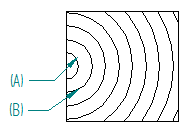

Pattern tab (Hatch Style and Fill Style)
Specifies the attributes of individual linear and radial elements in a new pattern or displays the attributes of an existing pattern. Once created, the pattern can be associated with new hatch styles and fill styles.
- Style
-
Displays the name of the currently selected style.
You can use the Name tab to change the name.
- Element
-
Specifies the current element in the pattern, which is the element being edited. It is shown in red in the Preview pane.
- Copy element
-
Copies the current element and adds it to the pattern.
- Delete element
-
Deletes the current element from the pattern.
- Linear elements
-
Specifies that you want to create or edit linear elements. This changes the display in the Preview pane to show the current element as a linear element.
- Radial elements
-
Specifies that you want to create or edit radial elements. This changes the display in the Preview pane to show the current element as a radial element.
- Type
-
Specifies the line type of the current element, such as continuous, dashed, zig-zag, and chain.
- Width
-
Specifies the width (thickness) of the current element.
- Spacing
-
Specifies the distance between occurrences of the current element.
- Pri/Sec axis ratio
-
Creates an ellipse from radial elements. It specifies the ratio between the primary axis and the secondary axis, where Primary Axis=Spacing.
Example:If Spacing=3, and Pri/Sec axis ratio=2, then for the first ellipse (A) the primary axis value is also 3, and the calculated value of the secondary axis is 1.5.
The remaining ellipses in the pattern (B) are calculated using the same spacing and ratio.

The default is 1.00 for system defined patterns. The minimum value is greater than 0.
- Shift
-
Specifies the distance the current element is shifted from the pattern origin. The shift units are determined by the element type:
-
Radial elements use angular units (degrees, radians, minutes-seconds).
-
Linear elements use linear units (millimeters, inches, feet-inches).
-
- Offset X
-
Specifies the distance along the X-axis from the shift distance for the current element.
You can use this option to offset the center of the pattern in the X direction.
- Offset Y
-
Specifies the distance along the Y-axis from the shift distance for the current element.
You can use this option to offset the center of the pattern in the Y direction.
- Angle
-
For linear patterns, specifies the angle of rotation for the current element.
- Preview
-
Displays the current hatch pattern and shows the result of changes you make.
- Center of radial pattern
-
Moves the center of the radial pattern within the square that contains the pattern. There are nine buttons. The left-center button is the default for the system defined radial pattern. Selecting a button adjusts the radial elements in the Preview pane so that the pattern is centered at that point, for example, at the left-top, right-bottom, or center-center of the square.
You can use the Offset X and Offset Y distances to further adjust the center of the radial pattern.
- Information Icon
-
Shows the total number of linear elements and the total number of radial elements in the current pattern in the descriptive text next to the information icon at bottom-right of the Pattern tab.
How do I
Create a custom line typeCreate a custom fill color
Create a hatch style
Look up more details
Custom Line Type dialog boxNew Line Style dialog box
Name tab (Style dialog box)
General tab (Line Style dialog box)
Modify Line Style dialog box
Fill Style dialog box
Name tab (Fill Style dialog box)
Properties tab (Fill Style dialog box)
Hatch Style dialog box
Name tab (Hatch Style dialog box)
Properties tab (Hatch Style dialog box)
Attributes Tab